Lesson 9 · Part 1 · The harness · 5 questions
Agent memory is just files
Read first: Why long sessions get worse
A model remembers nothing between sessions. Everything an agent "remembers" is a file that the harness reads from disk and puts into the context, some at the start of every session and some only when needed. Knowing which is which explains why rules get ignored and what your memory costs.
The idea
Picture a contractor who joins your team fresh every morning with no memory of yesterday. You don't try to make them remember. You leave a note on the desk: how to build, how to test, the one table nobody touches. The long material goes in a binder on the shelf, and they open it only when the task needs it. They read the note every single morning, so it had better be short. And if the note is wrong, they follow it anyway.
Agent memory works exactly like that:
- The model doesn't learn from your session. Its weights don't change while you chat. As Tokens and the context window showed, all it knows in a session is what is in the window, and a new session starts empty.
- At the start, the harness reads some files from disk and adds their text to the context: the context file (
CLAUDE.md,AGENTS.md) and, in some tools, a short index of saved notes. - Other files load on demand: when the agent starts working in a folder that has its own rules, or when it decides to open a notes file.
- "Saving a memory" is writing a file with the agent's normal file tools. The notes file from the last lesson's fresh-session advice is already memory.
- Next session, the harness reads the files again. That is the whole trick. There is no hidden database inside the model.

The bold box is the expensive one. Everything in it is in every request of every session, whether the task needs it or not.
Up close
Claude Code is a good example, because its docs spell out what loads when. Other agents follow the same pattern with different file names.
| File | When it loads |
|---|---|
~/.claude/CLAUDE.md (yours, all projects) | Every session start |
CLAUDE.md in the folder you start in, and in every folder above it | Every session start, joined together, outermost first |
Files imported with @path | With the file that imports them |
CLAUDE.md in a subfolder | When the agent reads or edits a file in that folder |
A rule in .claude/rules/ with paths: | When the agent works on a matching file |
Auto memory index, MEMORY.md | Every session start, first 200 lines or 25 KB |
| Auto memory topic files | When Claude decides to read them |
"Auto memory" is notes Claude writes for itself, such as corrections you gave it, in a folder in your home directory, one per repository. It stays on your machine. A path-scoped rule looks like this:
---
paths:
- "services/payments/**"
---
# Payments
- Amounts are integers, in pence.
- Call providers through lib/psp,
never with raw HTTP.Two details matter. First, the context file is not a setting. Claude Code adds it as a message after the system prompt, and the model reads it like any other text: a strong hint, never a guarantee. Second, @path imports don't save anything. They tidy a long file, but the imported text loads with it.
AGENTS.md is the shared, tool-neutral version of the same idea, now stewarded by a Linux Foundation project and read by Codex, Cursor, Gemini CLI, GitHub Copilot's coding agent and many others. Codex reads one from ~/.codex, then one from each folder from the repository root down to where you started, joins them, and stops adding files at 32 KiB by default. Recent versions of Claude Code read AGENTS.md when a project has no CLAUDE.md, and a CLAUDE.md can import it with @AGENTS.md.
Anthropic's API offers the same idea as a "memory tool": the model asks to view or create files under /memories, and your code stores them wherever you like. Memory, again, is files.
What memory costs
Say your context file has 2,000 lines, at about 12 tokens a line (a 50-character line ÷ 4). Compare it with a 150-line file:
| 2,000 lines | 150 lines | |
|---|---|---|
| Tokens in every request | ≈ 24,000 | ≈ 1,800 |
| First request of each session, at full price | 24,000 | 1,800 |
| Each later step, cached at ~0.1 | ≈ 2,400 | ≈ 180 |
| Your "use lib/psp" rule is | 1 line of 2,000 | 1 line of 150 |
Prompt caching makes the money part smaller than it looks, because the file sits near the start and doesn't change. The real cost is the last row. Claude Code's docs target under 200 lines per file, because "longer files consume more context and reduce adherence". If two lines contradict each other, the model may follow either one.
Stale memory is worse still. The agent treats the file as true. A wrong line doesn't just waste tokens; it sends the agent confidently in the wrong direction, where without it the agent would have looked at the code.
Your turn
Question 1 · ~2 min
Yesterday you spent an hour walking the agent through the refunds service. Today, in a new session, it asks the same questions again. Is something broken?
Show answer
No, that's how it works. The model learned nothing from yesterday. The conversation is gone, and only files survive. Next time, before you close a long session, ask the agent to write the key findings to a file (a few lines in the context file, or a notes file it can open), and check what it wrote.
Question 2 · ~2 min
Your CLAUDE.md is 1,800 lines. Line 1,240 says "call payment providers through the lib/psp client". The agent writes raw HTTP calls with its own retries anyway. The file did load. Why was the rule ignored?
Show answer
It was there, but buried. One line among 1,800 competes with everything else for the model's attention, and long files reduce adherence. Trim the file, and move the rule into a path-scoped rule for the payments folder, so it appears right when the agent touches that code. If the rule really matters, make it a check: a lint rule that fails on raw HTTP calls (see Turn unwritten rules into checks).
Question 3 · ~2 min
You add services/billing/CLAUDE.md with billing rules. You start Claude Code at the repository root and ask "what are our billing rules?" before it has opened any billing file. It doesn't know. Why?
Show answer
Subfolder files load on demand. Claude Code reads a subfolder's CLAUDE.md only once the agent reads or edits a file in that folder. That is the point: billing rules cost nothing while you work on search. Ask it to open a billing file first, or move rules that apply everywhere into the root file.
Question 4 · ~2 min
A teammate splits the 2,000-line CLAUDE.md into ten topic files and imports each one with @docs/…. "Now it's 20 lines." Is the context smaller?
Show answer
No. Imported files load together with the file that imports them, so every request still carries all 2,000 lines. To save tokens, the detail must load only when needed: path-scoped rules, subfolder files, or a plain mention without @ ("for migrations, read docs/migrations.md") that the agent opens only when the task calls for it.
Question 5 · ~3 min
Stretch: the context file says "run tests with make test". Three months ago the team moved to just test and deleted the Makefile target. The agent fails a few times, then "fixes" the problem by adding a test target back to the Makefile. Why is this worse than having no line at all?
Hint
Show answer
The agent trusts memory over the repository. With no line, it would have looked at the justfile or the CI config and found the real command. The stale line sent it confidently the wrong way, and it changed the code to match the note. Fix the line, review the context file in pull requests like code, and prefer pointing at the source of truth ("CI runs the tests, see .github/workflows/ci.yml") over copying details that will drift.
Interesting fact: Context as RAM, storage as disk
In October 2023, Charles Packer and colleagues at UC Berkeley published "MemGPT: Towards LLMs as Operating Systems". They treated the context window like a computer's RAM (the paper calls it "main context") and outside storage like disk ("external context"). The model moved data between the two itself, with function calls: saving facts to an archive, searching old messages, editing a small "working context" block. When the context got close to full, the system sent the model a "memory pressure" warning, so it could save what mattered before old messages were evicted and replaced with a running summary. They tested it on documents far bigger than the window, and on chat agents that remember across sessions. In 2024 the project became a company, Letta. Today's coding agents use a plainer version of the same design: a short index that is always loaded, and topic files read on demand.
Facts checked: November 2026 (Claude Code docs: memory; agents.md; OpenAI Codex docs: AGENTS.md; Anthropic API docs: memory tool; Packer et al., 2023).
Answers
- Question 1
No, that's how it works. The model learned nothing from yesterday. The conversation is gone, and only files survive. Next time, before you close a long session, ask the agent to write the key findings to a file (a few lines in the context file, or a notes file it can open), and check what it wrote.
- Question 2
It was there, but buried. One line among 1,800 competes with everything else for the model's attention, and long files reduce adherence. Trim the file, and move the rule into a path-scoped rule for the payments folder, so it appears right when the agent touches that code. If the rule really matters, make it a check: a lint rule that fails on raw HTTP calls (see Turn unwritten rules into checks).
- Question 3
Subfolder files load on demand. Claude Code reads a subfolder's
CLAUDE.mdonly once the agent reads or edits a file in that folder. That is the point: billing rules cost nothing while you work on search. Ask it to open a billing file first, or move rules that apply everywhere into the root file. - Question 4
No. Imported files load together with the file that imports them, so every request still carries all 2,000 lines. To save tokens, the detail must load only when needed: path-scoped rules, subfolder files, or a plain mention without
@("for migrations, readdocs/migrations.md") that the agent opens only when the task calls for it. - Question 5
The agent trusts memory over the repository. With no line, it would have looked at the
justfileor the CI config and found the real command. The stale line sent it confidently the wrong way, and it changed the code to match the note. Fix the line, review the context file in pull requests like code, and prefer pointing at the source of truth ("CI runs the tests, see.github/workflows/ci.yml") over copying details that will drift.